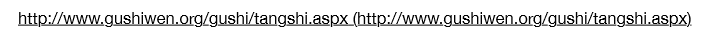
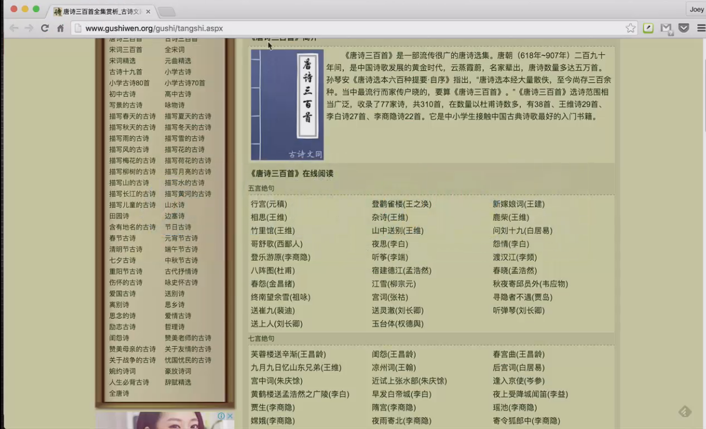
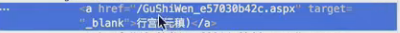
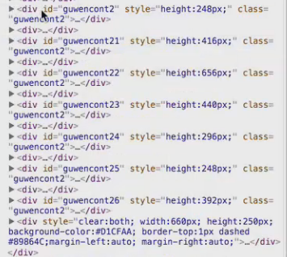
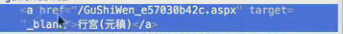
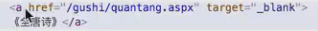
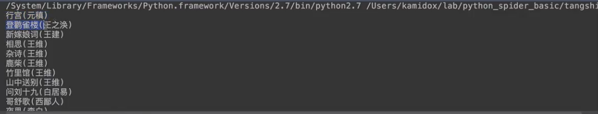
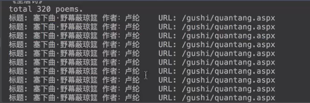
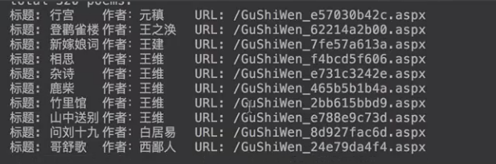
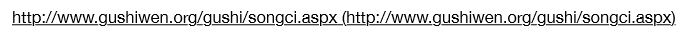

进入这个网站


那我们怎么从这个网页里面去把这个古诗三百首的每一首，标题，作者，还有标题网页的url给它爬下来呢？
1）爬取诗词标题
2）爬取诗词作者
3）爬取诗词的网页地址
我们需要去分析这个网站的数据结构，我们利用这个开发者工具。
我们要爬取的标题和作者都在这个文本里面，我们要爬取的url都在这个href属性里面。

另一方面，我们怎么去匹配我们需要爬取的数据呢？我们可以去观察我们需要匹配的数据的格式，不同的标题的每个div都是不同的。那这些div都有什么特征呢？我们可以看到，每个div后面都有一个class，我们可以利用这个特征，提取出我们需要的数据，还有，我们可以用id来区别也是可以的。

现在我们使用class来提取，我们感兴趣的是<a> </a>这个元素，这个a必须在这几个div的下面，在这个div下面的我们才感兴趣，而且这个文本一定要返回这个模式是标题（作者）这个格式，所以，只要满足这个数据格式的，我们就认为它是符合我们的数据要求的。通过这样的分析，我们就可以把这个唐诗三百首去给她爬下来，然后利用正则表达式去解析这个标题，作者，看这个是不是合法的数据，因为最后可能会有不合法的数据。

比如这个a虽然在这个div下面，但是她的文本是不合法的，它不是标题（作者）的格式。

接下来我们看看代码怎么实现：
# -*- coding: utf-8 -*-
import requests
import re
from HTMLParser import HTMLParser
def _attr(attrs, attrname): //从属性列表里面去获取指定的值
for attr in attrs:
if attr[0] == attrname:
return attr[1]
return None
class PoemParser(HTMLParser):
def __init__(self):
HTMLParser.__init__(self)
self.in_div = False //标志位是不是在这个div下面，默认是False
self.in_a = False //标志进去的是不是在感兴趣的a这个数据下
//正则表达式的实例变量，正则表达式：标题部分是任意的字符，但必须有一个括号，compile方法一是为了提高可读性，而是为了提高这个运行的效率，因为handle_data会调用很多次，但实际上我们的正则表达式是一直不变的
self.pattern = re.compile(r'''
(.+) #匹配标题 group(1)
\( #匹配作者左边的括号
(.+) #匹配作者 group(2)
\) #匹配作者右边的括号
‘’’,re.VERBOSE)
self.tangshi_list = [] //解析出的唐诗三百首数据放在一个数组里
self.current_poem = {} //当前正在解析的唐诗
def handle_starttag(self, tag, attrs):
if tag == 'div' and _attr(attrs, 'class') == 'guwencont2': //需满足条件
self.in_div = True //满足条件
if tag == 'a' and self.in_div:
self.in_a = True //感兴趣的a的数据
self.current_pome[‘url’] = _attr(attrs,’href’) //url的属性值
def handle_endtag(self, tag): //当标志位结束的时候，我们要把这个标志位给它反制回来
if tag == 'div': //不是在div标签里面
self.in_div = False
if tag == 'a': //不是在a的标志位里面
self.in_a = False
def handle_data(self, data):
if self.in_a: //当这个标志位在我们感兴趣的a的标志位里面时
print(data) //打印出这个数据，以便于后面的调试
m = self.pattern.match(data)
if m:
self.current_poem['title'] = m.group(1) //标题
self.current_poem['author'] = m.group(2) //作者
self.tangshi_list.append(self.current_poem)
def retrive_tangshi_300(): //从以下网址去爬取唐诗三百首的数据
url = 'http://www.gushiwen.org/gushi/tangshi.aspx'
r = requests.get(url) //获取到这个网页
parser = PoemParser()
parser.feed(r.content) //解析数据
return parser.tangshi_list //将唐诗三百首列表返回
if __name__ == '__main__':
l = retrive_tangshi_300() //调用这个唐诗三百首的函数，返回一个唐诗三百首的列表
print('total %d poems.' % len(l)) //打印出我们爬取出了多少首唐诗
for i in range(10):
print('标题: %(title)s\t作者：%(author)s\tURL: %(url)s' % (l[i])) //打印出前十首诗词的标题，作者和url
运行结果，先看我们打印的数据，这个数据是正确的。

我们再看打印的前十首古诗，这个是不正确的，因为我们把这个诗词单纯的加到列表里面，我们没有给它赋一个新的值，这样就导致，这样就导致，我们每次去修改的时候，都把最后一首诗加到里面，前面的都被覆盖掉，最后一首刚好就是塞下曲。

解决方法，修改代码：
# -*- coding: utf-8 -*-
import requests
import re
from HTMLParser import HTMLParser
def _attr(attrs, attrname): //从属性列表里面去获取指定的值
for attr in attrs:
if attr[0] == attrname:
return attr[1]
return None
class PoemParser(HTMLParser):
def __init__(self):
HTMLParser.__init__(self)
self.in_div = False //标志位是不是在这个div下面，默认是False
self.in_a = False //标志进去的是不是在感兴趣的a这个数据下
//正则表达式的实例变量，正则表达式：标题部分是任意的字符，但必须有一个括号，compile方法一是为了提高可读性，而是为了提高这个运行的效率，因为handle_data会调用很多次，但实际上我们的正则表达式是一直不变的
self.pattern = re.compile(r'''
(.+) #匹配标题 group(1)
\( #匹配作者左边的括号
(.+) #匹配作者 group(2)
\) #匹配作者右边的括号
‘’’,re.VERBOSE)
self.tangshi_list = [] //解析出的唐诗三百首数据放在一个数组里
self.current_poem = {} //当前正在解析的唐诗
def handle_starttag(self, tag, attrs):
if tag == 'div' and _attr(attrs, 'class') == 'guwencont2': //需满足条件
self.in_div = True //满足条件
if tag == 'a' and self.in_div:
self.in_a = True //感兴趣的a的数据
self.current_pome[‘url’] = _attr(attrs,’href’) //url的属性值
def handle_endtag(self, tag): //当标志位结束的时候，我们要把这个标志位给它反制回来
if tag == 'div': //不是在div标签里面
self.in_div = False
if tag == 'a': //不是在a的标志位里面
self.in_a = False
def handle_data(self, data):
if self.in_a: //当这个标志位在我们感兴趣的a的标志位里面时
print(data) //打印出这个数据，以便于后面的调试
m = self.pattern.match(data)
if m:
self.current_poem['title'] = m.group(1) //标题
self.current_poem['author'] = m.group(2) //作者
self.tangshi_list.append(self.current_poem)
self.current_poem = {} //把当前的诗词保存起来以后，我们要给它赋一个新的空字典，这样我们前面的就不会被覆盖掉
def retrive_tangshi_300(): //从以下网址去爬取唐诗三百首的数据
url = 'http://www.gushiwen.org/gushi/tangshi.aspx'
r = requests.get(url) //获取到这个网页
parser = PoemParser()
parser.feed(r.content) //解析数据
return parser.tangshi_list //将唐诗三百首列表返回
if __name__ == '__main__':
l = retrive_tangshi_300() //调用这个唐诗三百首的函数，返回一个唐诗三百首的列表
print('total %d poems.' % len(l)) //打印出我们爬取出了多少首唐诗
for i in range(10):
print('标题: %(title)s\t作者：%(author)s\tURL: %(url)s' % (l[i])) //打印出前十首诗词的标题，作者和url
运行结果，最后的输出，这次是成功的。

宋词精选

1）词牌名
2）标题
3）作者
【本文由麦子学院独家原创，转载请注明出处并保留原文链接】